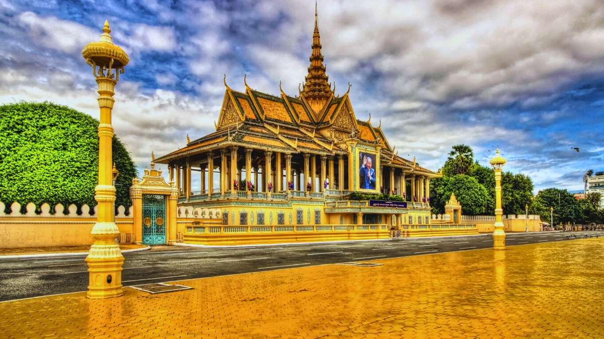
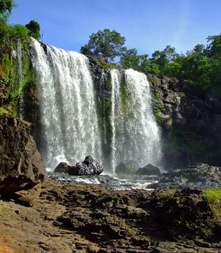
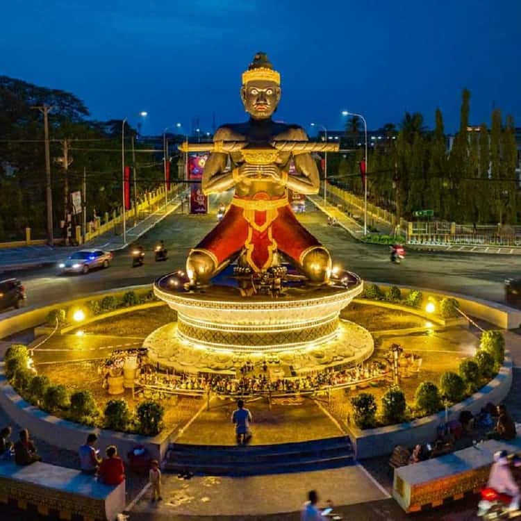
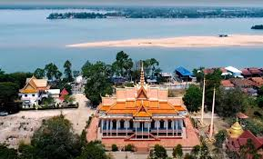
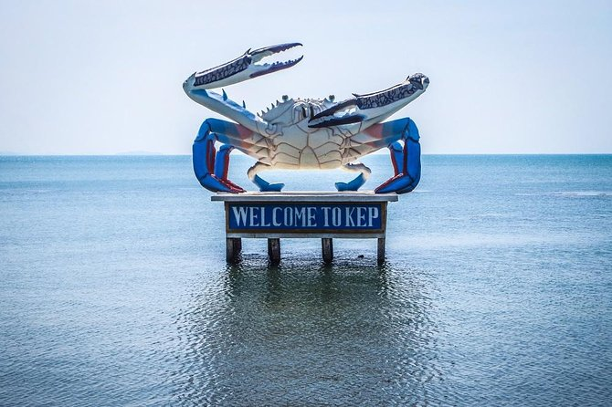
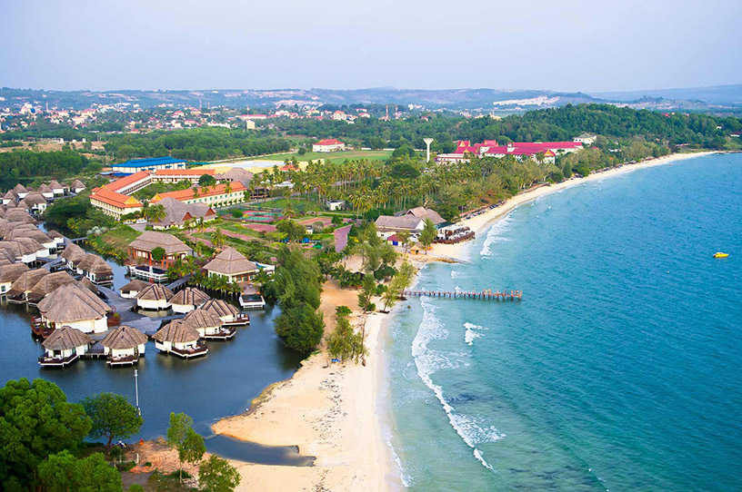
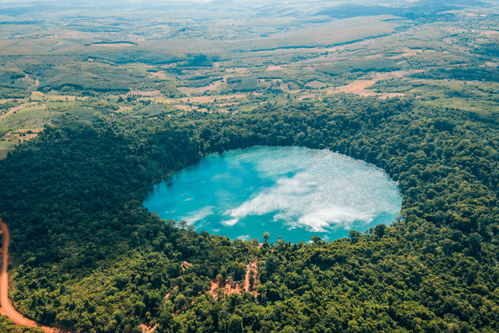
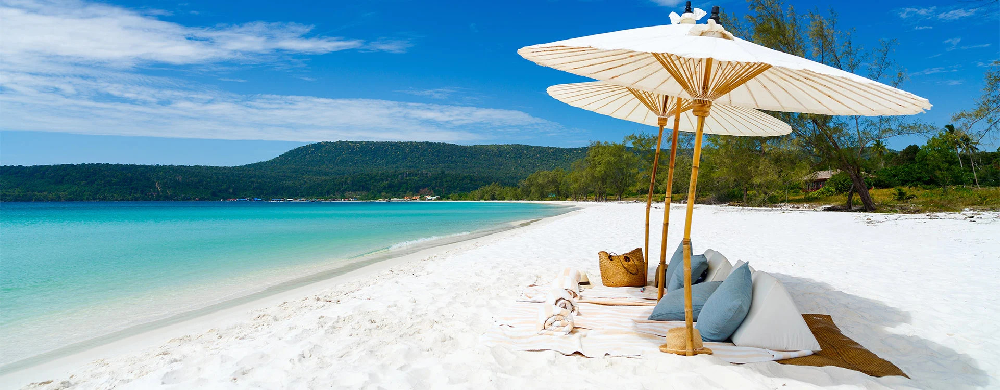
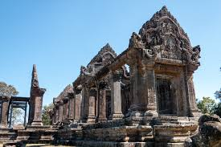

Cambodia Trip Planner
Choose a destination and get a complete travel plan — day-by-day itinerary, packing list, local tips, and the best times to visit.
Pick a Destination
Browse Cambodia's iconic places below and click any card to select it.
View Your Plan
A full travel plan appears with itinerary, packing list, and local tips.
Go & Explore
Follow the plan at your own pace and discover the Kingdom of Wonder.
Pick Your Destination
Select one of Cambodia's iconic places to reveal its complete travel plan.












No destination selected yet
Click any destination card above to reveal its full travel plan!

Siem Reap
The gateway to the ancient Khmer empire — temples, night markets, and floating villages await.
Angkor at Sunrise
Temple Marathon- 5:00 AMCatch sunrise at Angkor Wat reflecting pool
- 8:00 AMBreakfast at a local café near the main gate
- 9:30 AMExplore Angkor Wat interior galleries & bas-reliefs
- 12:00 PMRest — avoid midday heat (hotel or café)
- 3:00 PMTa Prohm — jungle temple with ancient tree roots
- 5:30 PMSunset from Phnom Bakheng hill viewpoint
- 8:00 PMPub Street night market & Khmer BBQ dinner
Angkor Thom & Beyond
Hidden Gems- 6:30 AMBayon Temple — 216 serene stone faces
- 9:00 AMElephant Terrace & the Royal Palace ruins
- 11:00 AMNeak Pean — island temple & peaceful walk
- 1:00 PMLunch: amok fish curry at a riverside restaurant
- 3:00 PMBanteay Srei — pink sandstone "jewel of Khmer art"
- 6:00 PMApsara dance cultural dinner show
Village & Water Life
Local Culture- 8:00 AMRent a bicycle, ride through rice paddies
- 10:00 AMArtisans Angkor workshop — silk weaving & silver
- 12:30 PMCooking class: make your own Khmer dishes
- 3:00 PMBoat tour on Tonlé Sap Lake floating village
- 6:30 PMTraditional Khmer massage & reflexology
- 8:00 PMFarewell dinner at Shadow of Angkor restaurant
Outer Temples Circuit
Hidden Wonders- 7:00 AMBeng Mealea — atmospheric jungle-covered temple (60 km)
- 9:30 AMExplore collapsed galleries & hidden courtyards
- 12:00 PMCountryside lunch at a local family restaurant
- 2:00 PMBanteay Samre — underrated moated temple
- 4:30 PMPre Rup — evening views over the plains
- 7:30 PMDinner at a riverside garden restaurant in Siem Reap
Phnom Kulen & Relax
Sacred Mountain- 7:30 AMDrive to Phnom Kulen National Park (50 km)
- 9:30 AMRiver of a Thousand Lingas — sacred carvings in riverbed
- 11:00 AMSwim at Phnom Kulen waterfall
- 1:00 PMPicnic & lunch near the falls
- 3:00 PMGiant reclining Buddha at the mountain summit
- 5:30 PMLast souvenir shopping at Old Market (Phsar Chas)
- 8:00 PMFarewell cocktail at a Pub Street rooftop bar
Clothing
- Lightweight long pants (temple dress code)
- Modest tops covering shoulders
- Breathable t-shirts & shorts
- Comfortable walking sandals
- Sturdy sneakers or trekking shoes
- Light rain jacket (wet season)
- Shawl / scarf for temple visits
Health & Safety
- SPF 50+ sunscreen (essential!)
- DEET insect repellent
- Oral rehydration salts
- Antihistamines & diarrhea meds
- Basic first aid kit
- Water purification tablets
- Hand sanitizer
Gear & Tech
- Camera + extra memory cards
- Power bank (10,000 mAh+)
- Universal travel adapter
- Headlamp / torch
- Lightweight daypack
- Offline map downloaded
Money & Documents
- USD cash (widely accepted)
- Angkor Pass (1/3/7-day options)
- Passport + photocopies
- Travel insurance card
- Vaccination records
- Emergency contact card
Go at Sunrise
Beat the crowds and heat. Angkor Wat at 5:30 AM is magical — the reflection pool glows orange and you'll have it nearly to yourself.
Dress Respectfully
Covered knees and shoulders are required at all temples. Keep a sarong in your bag — guards enforce the rule strictly at Angkor Wat.
Hire a Tuk-tuk Driver
Negotiate a full-day tuk-tuk for $15–20 USD. Your driver becomes a guide, knows the best routes, and waits while you explore.
Stay Hydrated
Cambodia heat is serious. Carry at least 2L of water. Coconut water sold near temples is refreshing and cheap ($0.50–1).
Use USD & Small Bills
USD is king. Carry $1–5 bills for tuk-tuks, food stalls and tips. Riel change is given for amounts under $1.
Avoid Scams
Buy your Angkor Pass only at the official ticket office. Beware of "free tours" that lead to souvenir shops.
Phnom Penh
A vibrant capital where history, culture, and modernity collide along the Mekong and Tonlé Sap rivers.
History & Heritage
Royal & Sobering History- 8:00 AMRoyal Palace & Silver Pagoda morning visit
- 10:30 AMNational Museum of Cambodia — Khmer sculptures
- 12:30 PMLunch at FCC riverside
- 2:30 PMTuol Sleng Genocide Museum (S-21 Prison)
- 4:30 PMChoeung Ek Killing Fields memorial
- 7:00 PMSunset cruise on Mekong & Tonlé Sap confluence
Markets & City Life
Local Experience- 7:00 AMBreakfast: Khmer noodle soup (kuyteav) at Kandal Market
- 9:00 AMCentral Market — Art Deco dome & shopping
- 11:00 AMCycling tour along Sisowath Quay
- 1:00 PMStreet food lunch: lok lak beef & baguettes
- 3:00 PMBophana Audiovisual Resource Center
- 5:00 PMRussian Market — handicrafts & gems
- 8:00 PMRooftop cocktails at Eclipse Sky Bar
Riverfront & Modern PP
Contemporary City- 7:30 AMMorning jog or walk along Sisowath Quay waterfront
- 9:00 AMWat Phnom — hilltop pagoda and city park
- 11:00 AMMeta House gallery — contemporary Khmer art
- 12:30 PMTrendy lunch at Friends Restaurant (social enterprise)
- 2:30 PMBKK1 neighborhood — boutiques, cafés & art spaces
- 4:30 PMSecond sunset boat cruise on Mekong confluence
- 7:00 PMFarewell dinner — fine dining at Embassy Restaurant
Clothing
- Lightweight breathable clothes
- Smart casual for nicer restaurants
- Comfortable walking shoes
- Modest clothing for pagodas
- Light jacket for AC restaurants
Health
- Sunscreen & lip balm
- Insect repellent
- Stomach medication
- Rehydration sachets
- N95 mask (air quality)
Gear
- Camera with good low-light
- Power bank
- Grab app installed (taxis)
- Small crossbody bag (anti-theft)
Documents
- USD cash & ATM card
- Passport copy
- Travel insurance
- Hotel address in Khmer script
Use Grab or PassApp
Grab and PassApp are the safest way to get around. Cheaper than tuk-tuks for longer rides and prices are fixed — no negotiation stress.
Prepare Emotionally
Tuol Sleng and Choeung Ek are deeply affecting. Allow time to reflect. Guided tours provide crucial historical context.
Evenings on the Riverfront
Sisowath Quay at night is magical. Street food vendors, bars, and the glow on the river make it the best free activity in the city.
Watch Your Belongings
Bag snatching from motorbikes occurs. Keep bags on your inside shoulder, away from the road. Don't flash expensive items.

Koh Rong
Cambodia's tropical island gem — turquoise waters, bioluminescent plankton, and pure beach bliss.
Arrival & Beach Day
Settle In- MorningFerry from Sihanoukville (1.5 hrs)
- NoonCheck in, drop bags, change into swimwear
- 1:00 PMLong Set Beach — swim & relax
- 4:00 PMSnorkeling near the pier
- 7:00 PMBeach bonfire & BBQ seafood dinner
- 9:30 PMNight swim — watch bioluminescent plankton glow!
Jungle Trek & Diving
Adventure Day- 7:30 AMJungle hike to Lonely Beach (1.5 hr trail)
- 10:00 AMSnorkel or dive at coral reef site
- 1:00 PMFresh catch lunch at a beach shack
- 3:00 PMKayaking around the island's coves
- 6:00 PMSunset from the western beach point
- 8:00 PMBeachside bar — hammock & cocktails
Island Hopping
Explore & Unwind- 9:00 AMBoat trip to Koh Rong Sanloem island
- 11:00 AMSwim at Saracen Bay — crystal clear water
- 1:00 PMSeafood BBQ lunch on the beach
- 3:00 PMLazy afternoon — hammock & book
- 5:30 PMReturn ferry to Koh Rong
- 8:00 PMStargazing on the beach — zero light pollution
Deep Dive & Coral
Under the Sea- 8:00 AMPADI discover scuba diving session (beginner-friendly)
- 11:00 AMCoral reef snorkeling — spot sea turtles
- 1:00 PMFresh catch BBQ on the beach
- 3:00 PMVillage Beach — the quieter, local side of the island
- 6:00 PMGolden hour swim — the water glows in the light
- 9:00 PMBioluminescent night swim — the best yet!
Departure Day
Final Island Morning- 6:00 AMSunrise at the pier — breathtaking colors over the sea
- 8:00 AMLast morning swim at your favourite beach
- 10:00 AMFinal breakfast — full pancakes at a beach shack
- 12:00 PMFerry back to Sihanoukville (1.5 hrs)
Clothing
- Swimsuits (bring 2–3)
- Rash guard (sun protection)
- Light shorts & tank tops
- Sandals & flip flops
- Light long sleeve for night
- Quick-dry towel
Beach Essentials
- Reef-safe sunscreen SPF50+
- Waterproof bag / dry bag
- Snorkel mask & fins
- Waterproof phone case
- Insect repellent (jungle)
- After-sun aloe vera gel
Power & Tech
- Large power bank
- Waterproof camera or GoPro
- Download offline maps (no 4G)
- Enough cash — no ATMs on island!
Health
- Sea-sickness tablets
- Antihistamine (insects at night)
- Rehydration salts
- Waterproof bandages
- Malaria prevention (consult doctor)
Bring Enough Cash
There are NO ATMs on Koh Rong. Withdraw USD in Sihanoukville before boarding. Budget $40–60/day for food, drinks & activities.
The Bioluminescence
Don't miss a night swim! Wade into the shallow water and wave your hands to see the electric-blue plankton glow. No flashlight needed.
Embrace the Offline Life
Wi-Fi is limited and slow. Embrace the digital detox — it's one of the last places in Cambodia truly off the grid.
Book Ferries Early
Ferries sell out during high season. Book your return in advance and confirm the schedule — cancellations happen in bad weather.
Kampot
A laid-back riverside town famous for pepper, cave temples, and the best sunsets in Cambodia.
Old Town & River
Slow Travel Vibes- 9:00 AMBreakfast & coffee in Kampot old town
- 10:30 AMBike the riverside road — French colonial architecture
- 1:00 PMLunch: Khmer fish amok at Rikitikitavi
- 3:00 PMKampot pepper farm tour & tasting
- 5:30 PMSunset by the river — grab a hammock at a café
- 8:00 PMRiverside BBQ & live music at Epic Arts
Caves & Coastline
Adventure & Nature- 8:00 AMPhnom Chhnork cave temple — ancient Hindu shrine
- 10:30 AMSwimming in Kampot river (boat tour)
- 12:30 PMKep crab market lunch — famous pepper crab!
- 3:00 PMKep National Park — jungle trail to beach
- 6:00 PMSunset at Kep Beach
- 8:00 PMDinner back in Kampot — explore night market
Bokor Hill Station
Mountain Escape- 8:00 AMDrive up to Bokor National Park (1,000m altitude)
- 9:30 AMExplore the eerie abandoned French colonial casino
- 11:00 AMBokor Hill Catholic Church ruins & cloud forest
- 1:00 PMLunch at a mountaintop restaurant with valley views
- 3:00 PMWaterfall hike in the national park
- 6:00 PMSunset over the Gulf of Thailand from the summit
- 8:00 PMLast night in Kampot — riverside drinks & street food
Clothing
- Light casual clothes
- Swimsuit for river dips
- Sturdy shoes for caves
- Bug-proof long sleeve for evenings
Activities
- Bicycle-friendly shoes
- Small backpack for day trips
- Waterproof bag
- Headlamp (cave visits)
- Reusable water bottle
Health
- Sunscreen & hat
- Insect repellent (evenings)
- Stomach & allergy meds
- Rehydration salts
Buy Kampot Pepper
Kampot pepper is world-famous and UNESCO-recognized. Buy direct from farms — far cheaper and fresher than any airport store.
Kampot Runs Slow
This is a place to decompress. Don't overschedule — the best moments are unplanned boat rides and hammock afternoons.
Kep Crab is a Must
The 15-minute tuk-tuk ride to Kep for pepper crab at the crab market is mandatory. Order the crab with fresh Kampot green pepper.
Rent a Bicycle
Kampot is perfectly sized for cycling. Rent a bike for $2–3/day and explore countryside, farms, and river roads at your own pace.
Mondulkiri
Cambodia's wild east — rolling highlands, elephant sanctuaries, and indigenous Bunong culture.
Elephants & Forest
Ethical Wildlife- 7:00 AMElephant Valley Project — ethical sanctuary
- 10:00 AMWalk with elephants through the forest (no riding!)
- 12:30 PMLunch with the mahouts — local food
- 3:00 PMWatch elephants bathe in the river
- 5:30 PMReturn to Sen Monorom — rest & relax
- 7:30 PMBunong barbecue dinner around bonfire
Waterfalls & Village
Nature & Culture- 8:00 AMBou Sra Waterfall — Cambodia's largest two-tier falls
- 10:30 AMTrek through the rainforest
- 1:00 PMPicnic lunch by the falls
- 3:00 PMBunong indigenous village visit & culture talk
- 5:00 PMMondulkiri coffee at a hilltop café
- 8:00 PMIncredible stargazing — zero light pollution
Trekking & Wildlife
Wild East- 6:30 AMBird watching in pine forest
- 9:00 AMFull-day trekking — Mondulkiri highlands loop
- 12:00 PMFarm-to-table lunch at eco-lodge
- 3:00 PMMotorbike ride to Rokha Kiri viewpoint
- 6:00 PMPanoramic sunset over rolling highlands
Green Valley & Departure
Last Wild Day- 6:00 AMSunrise over the highlands from hilltop viewpoint
- 8:00 AMVisit a local coffee & cashew plantation
- 10:00 AMDak Dam waterfall — hidden gem in the forest
- 12:30 PMTraditional Bunong meal at a community homestay
- 3:00 PMSen Monorom market — buy handwoven Bunong baskets
- 5:00 PMEvening bus back to Phnom Penh (overnight)
Clothing
- Warm layer — highlands get cold at night
- Long pants for trekking
- Waterproof jacket
- Sturdy trekking boots
- Wool or fleece top
- Quick-dry socks (multiple pairs)
Trekking Gear
- Trekking poles
- Daypack (20L)
- Rain poncho
- Headlamp + extra batteries
- Gaiters (wet season)
- Emergency whistle
Health
- Malaria prevention (consult doctor)
- Strong DEET repellent
- Blister plasters
- Antiseptic cream
- Allergy and antihistamine meds
Essentials
- Enough cash (limited ATMs)
- Offline map downloaded
- Local SIM card (buy in PP)
- Snacks for long treks
Choose Ethical Elephant Tours
Only visit sanctuaries where elephants roam free and are not ridden. The Elephant Valley Project is the gold standard — book ahead.
Pack Warm Clothes
Mondulkiri nights drop to 15°C in peak season. Most visitors are unprepared. A fleece or light down jacket is essential.
Road Conditions
Roads to Sen Monorom are rough. The bus is the safest way (7 hrs from Phnom Penh). Motorbike rentals available locally.
Respect Bunong Culture
Ask before photographing villagers. Remove shoes before entering longhouses. Small community tourism fees go directly to local families.
Battambang
Cambodia's creative capital — French colonial charm, circus arts, bamboo train, and bat caves.
City & Colonial Charm
Art & Architecture- 9:00 AMWalk the French colonial old town
- 11:00 AMPhare Ponleu Selpak — Cambodian circus arts school
- 1:00 PMLunch at Jaan Bai (social enterprise restaurant)
- 3:00 PMGallery visit — local contemporary art
- 5:00 PMSunset cycling along Sangker River
- 8:00 PMPhare circus performance (book in advance!)
Bamboo Train & Bats
Only-in-Cambodia- 8:00 AMBamboo train (norry) ride through the countryside
- 10:30 AMWat Banan — hilltop temple, 358 steps up
- 1:00 PMRice wine tasting at a local village
- 3:00 PMPhnom Sampeau — mountaintop temple & killing caves
- 5:30 PMWatch 3 million bats spiral out at sunset!
- 8:00 PMNight market dinner & Battambang nightlife
Countryside & Temples
Rural Battambang- 8:00 AMMorning cycle through rice paddies & sugar palm groves
- 10:00 AMWat Ek Phnom — 11th-century riverside temple ruins
- 12:00 PMVillage lunch with a local family
- 2:30 PMBattambang winery — Cambodian rice wine tasting
- 4:30 PMSunset boat cruise on the Sangker River
- 7:30 PMFarewell dinner at a riverside terrace restaurant
Clothing
- Comfortable walking shoes
- Light layers (AC in restaurants)
- Modest clothes for temples
- Hat and sunglasses
Gear
- Camera with telephoto (bats!)
- Tripod for bat emergence
- Power bank
- Torch for caves
Health
- Sunscreen
- Insect repellent
- Good walking shoes for temple steps
- Water bottle
The Bat Emergence
Every evening at 5:30 PM, millions of bats spiral out from Phnom Sampeau caves. Arrive 30 minutes early — it lasts about 45 minutes.
Book the Circus Early
Phare circus shows sell out fast. Book online at least 2 days in advance. Revenue supports at-risk youth in the community.
The Bamboo Train
The "norry" is a flat bamboo platform on wheels that rattles along old French railway tracks. It's rickety, fast, and completely unforgettable.
Eat at Social Enterprises
Battambang has several restaurants that train underprivileged youth. Jaan Bai and Pomme are excellent — great food with real social impact.
Kratie
A tranquil riverside town on the Mekong — home to the rare Irrawaddy river dolphins.
Dolphins & River Life
Mekong Magic- 7:00 AMCoffee & baguette at a riverside café
- 8:30 AMBoat trip to Kampi dolphin pool
- 10:00 AMSpot Irrawaddy dolphins in the wild
- 12:00 PMLunch at local market (fresh Mekong fish)
- 2:00 PMCycle around Koh Trong island
- 5:30 PMSunset over the Mekong from a riverside café
- 7:30 PMQuiet evening — hammock, river breeze, stars
Temples & Countryside
Rural Exploration- 8:00 AMPhnom Sombok temple — hilltop views
- 10:00 AMWalk through Kratie old town & colonial buildings
- 12:30 PMMekong river fish lunch
- 2:30 PMVillage cycling — rice paddies & farms
- 5:00 PMSecond dolphin boat trip (golden hour light!)
- 7:00 PMFarewell dinner & Mekong night views
Stung Treng Day Trip
Mekong Discovery- 7:00 AMEarly minivan to Stung Treng (1.5 hrs north)
- 9:00 AMBoat trip to Preah Rumkel — 4,000 Islands zone border
- 11:00 AMSpot dolphins at the Cambodian-Laos border stretch
- 1:00 PMRiverside lunch in Stung Treng town
- 3:00 PMMekong Discovery Trail cycling section
- 5:30 PMReturn minivan to Kratie by sunset
- 7:30 PMFarewell Mekong dinner & night views
Clothing
- Light, breathable clothes
- Long sleeve for Mekong evenings
- Sandals & sneakers
- Hat and sunglasses
Gear
- Binoculars for dolphin spotting
- Zoom camera lens
- Sunscreen (no shade on boats)
- Waterproof bag
Essentials
- Cash (limited ATMs)
- Reusable water bottle
- Offline maps
- Insect repellent
Dolphin Etiquette
Stay in licensed boats and keep the required distance. The Irrawaddy dolphin is critically endangered — responsible tourism is essential.
Koh Trong by Bicycle
Take the tiny ferry (500 riel) to Koh Trong island and rent a bicycle for $1. The 8km loop through villages and farms is one of Cambodia's most peaceful rides.
Go Early for Dolphins
Dolphins are most active at dawn and dusk. The 7 AM boat trip gives calm water, cool air, and more active dolphins than midday tours.
Getting to Kratie
Minivan from Phnom Penh takes 4–5 hours ($8–12). Book through a guesthouse for a safe, direct connection. Night buses also available.
Kep
Cambodia's quiet coastal gem — legendary pepper crab, untouched beaches, and a nostalgic colonial charm.
Crabs & Coastal Bliss
The Kep Classic- 9:00 AMBreakfast at a beachside café in Kep
- 10:30 AMKep National Park — coastal jungle trail
- 12:30 PMKep Crab Market — famous pepper crab lunch!
- 3:00 PMFerry to Rabbit Island (Koh Tonsay) — snorkel & swim
- 5:30 PMSunset at Kep Beach with fresh coconut
- 7:30 PMSeafood dinner at a crab market restaurant
Rabbit Island & Villas
Hidden Kep- 8:00 AMEarly ferry to Rabbit Island (Koh Tonsay)
- 9:00 AMFull morning on Rabbit Island's pristine beach
- 12:00 PMBBQ seafood lunch at a beach shack on the island
- 2:30 PMSnorkeling around the island's coral patches
- 4:00 PMReturn ferry to Kep
- 5:00 PMExplore Kep's haunting abandoned Art Deco villas
- 7:00 PMLast supper at the crab market — pepper crab again!
Clothing
- Swimsuit & beach shorts
- Light summer clothes
- Sandals for beach walks
- Sun hat & sunglasses
Essentials
- Reef-safe sunscreen
- Snorkel gear (or rent on island)
- Cash for crab market
- Water bottle
Order Pepper Crab
Kep's specialty is crab cooked with fresh Kampot green pepper. Choose your live crab from the tank and watch it cooked right in front of you.
Day Trip to Rabbit Island
Boats to Koh Tonsay run from Kep pier (~$5 return). The island has pristine beaches and simple seafood shacks — bring cash and enjoy the slow pace.
Combine with Kampot
Kep is only 25 km from Kampot — perfectly combined as a day trip. Hire a tuk-tuk for $10–15 for a half-day of crab, beaches, and pepper farms.
Explore Abandoned Villas
Kep was a resort town for Cambodia's elite pre-Khmer Rouge. The empty Art Deco ruins scattered around town are hauntingly beautiful to explore.
Sihanoukville
Cambodia's coastal hub — the main gateway to Koh Rong island and home to lively beaches.
Beaches & Island Prep
Coastal Gateway- 9:00 AMOtres Beach — quietest & most scenic in town
- 12:00 PMSeafood lunch at Otres Village
- 2:30 PMWithdraw USD at ATMs for island trip
- 4:00 PMBuy ferry tickets to Koh Rong for next morning
- 6:00 PMSunset at Sokha Beach
- 8:00 PMBeachside dinner & early night before island ferry
Otres Village & Ream
Nature & Coast- 7:30 AMReam National Park — mangrove forest boat tour
- 10:00 AMSnorkeling at Ream's coral reefs
- 1:00 PMLunch at Otres Beach 2 — freshest fish in town
- 3:00 PMLazy afternoon on Otres Beach — drinks & hammock
- 6:00 PMSunset at Serendipity Beach
- 8:00 PMEarly pack — morning ferry to the islands tomorrow
Essentials
- Beach clothes & swimwear
- Sandals & flip flops
- Light rain jacket
- Small daypack
Money & Documents
- Plenty of USD cash (for islands)
- Ferry booking confirmation
- Passport (for ferry)
- Travel insurance
Stock Up on Cash
ATMs are plentiful in Sihanoukville but scarce on the islands. Withdraw enough USD here — budget $50–80 per day for island life.
Check Ferry Times
Ferries to Koh Rong leave early morning (8–9 AM). Book the day before at the pier or through your guesthouse to guarantee a seat.
Head to Otres Beach
Avoid the busy central beaches and head to Otres Beach instead — it's a 10-minute tuk-tuk ride with much calmer, cleaner surroundings.
Transit Mindset
Most travellers use Sihanoukville purely as a transit point for the islands. Don't plan too much here — save your energy for Koh Rong!
Banlung
Ratanakiri's remote capital — volcanic crater lakes, jungle treks, and the indigenous cultures of Cambodia's northeast.
Crater Lake & Market
Arrival Day- 9:00 AMBanlung market — vibrant indigenous traders
- 11:00 AMYeak Laom volcanic crater lake — swim & kayak
- 1:30 PMLunch in the park — local jungle food
- 3:30 PMTampuan indigenous village cultural visit
- 6:00 PMSunset bonfire dinner at eco-lodge
Waterfalls & Trekking
Deep Jungle- 7:00 AMKa Chanh & Cha Ong waterfalls hike
- 10:00 AMGuided jungle trek — spot gibbons & rare birds
- 1:00 PMPicnic lunch deep in the jungle
- 3:30 PMRuby and gemstone mining village tour
- 6:00 PMStargazing from the crater lake viewpoint
Remote Villages & Jade Lake
Off the Beaten Path- 7:30 AMMotorbike ride to remote Jarai village (30 km)
- 9:30 AMTraditional spirit house ceremony — witness local beliefs
- 11:30 AMSwim at a second volcanic lake — Ka Tieng Lake
- 1:00 PMLunch at an indigenous community restaurant
- 3:00 PMGibbon-watching trek in Virachey National Park buffer
- 6:00 PMBonfire farewell dinner at eco-lodge under the stars
Clothing
- Long pants for trekking (leeches!)
- Quick-dry t-shirts
- Waterproof boots or trail shoes
- Warm layer for evenings
- Swimsuit for crater lake
Trekking
- Leech-proof socks
- Strong DEET repellent
- Headlamp
- Trekking poles
- Waterproof daypack
Essentials
- Cash (only 1–2 ATMs in town)
- Offline maps
- Malaria prevention
- Water purification tablets
Swim in Yeak Laom
This circular volcanic crater lake is one of Cambodia's most beautiful spots. The water is remarkably clear and swimming is permitted — don't miss it.
Consider Flying
Banlung is 10+ hours by bus from Phnom Penh on rough roads. Sky Angkor Airlines operates small planes from PP in ~1 hour — worth the splurge.
Leech Season Warning
During rainy season, jungle trails are full of leeches. Tuck pants into leech socks and wear closed shoes. They're harmless but surprising!
Indigenous Culture
Ratanakiri is home to many ethnic minority groups. Hire local guides who ensure your tourism fees benefit communities directly.
Koh Kong
The gateway to the Cardamom Mountains — kayaking, jungle rivers, waterfalls, and pristine mangroves.
Rivers & Mangroves
Water World- 8:00 AMKayak through Koh Kong mangrove forest
- 11:00 AMTatai Waterfall — swim in jungle pools
- 1:00 PMRiverside BBQ lunch on the Tatai River
- 3:00 PMBoat through Cardamom wildlife corridor
- 5:30 PMSunset from a floating bungalow on the river
- 8:00 PMNight boat — spot fireflies along the river
Jungle Trekking
Cardamom Mountains- 7:00 AMGuided trek into Cardamom Mountains
- 10:00 AMWildlife spotting — sun bears, gibbons, hornbills
- 1:00 PMJungle picnic lunch
- 3:00 PMKayak back to town via the Koh Por rapids
- 6:00 PMFarewell dinner at Koh Kong waterfront
Peam Krasaop & Departure
Mangrove Finale- 7:00 AMMorning boat to Peam Krasaop Wildlife Sanctuary
- 8:30 AMWalk the mangrove boardwalk — spot herons & monitor lizards
- 10:30 AMSwim at Koh Kong Island — white sand & clear water
- 1:00 PMFresh seafood lunch on the island
- 3:30 PMReturn boat & bus toward Phnom Penh or Sihanoukville
- 6:00 PMWatch the sunset from the bus as you leave Koh Kong
Clothing
- Quick-dry clothes (always wet!)
- Swimwear for waterfalls
- Sturdy closed-toe shoes
- Long pants for jungle
Adventure Gear
- Waterproof dry bag
- Waterproof camera / GoPro
- Strong DEET repellent
- Headlamp for night boat
Health
- Malaria prevention (consult doctor)
- Waterproof bandages
- Antiseptic cream (river cuts)
- Rehydration salts
Float the Tatai River
The floating bungalows on the Tatai River are magical — sleeping over water in the jungle with fireflies at night is an unmissable Cambodia experience.
Cardamom Eco-Tourism
Book tours with operators that fund rainforest conservation. The Cardamom Mountains have the highest biodiversity in Southeast Asia — protect it.
Border Crossing
Koh Kong sits on the Thai-Cambodia border. The Cham Yeam / Hat Lek crossing is straightforward if entering or exiting Cambodia via Thailand.
Getting There
4–5 hours from Phnom Penh by bus ($6–10). Buses also run from Sihanoukville (2 hrs). Arrange jungle tours through your guesthouse on arrival.
Kampong Thom
Home to Sambor Prei Kuk — Cambodia's oldest temple complex, predating Angkor by 500 years, set in serene jungle.
Sambor Prei Kuk
UNESCO Jungle Temples- 8:00 AMArrive from Phnom Penh or Siem Reap — check in
- 9:30 AMNorth Group — 7th-century Isanapura temples in jungle
- 11:00 AMCentral Group — the iconic circular tower temples
- 1:00 PMLunch at a local restaurant in Kampong Thom town
- 3:00 PMSouth Group — shrines with beautiful ancient carvings
- 5:30 PMCycle along the Stung Sen river at golden hour
- 7:30 PMDinner: Khmer countryside cuisine, fresh river fish
Villages & Praying Hands
Local Life & Culture- 7:00 AMBreakfast at local market — rice porridge (bobor)
- 8:30 AMKampong Thom main market — vibrant and local
- 10:00 AMBike to Phnom Santuk — sacred hill temple with Buddha statues
- 12:00 PMPicnic lunch at the temple gardens
- 2:30 PMVisit a silk-weaving village on the Stung Sen river
- 5:00 PMSunset at Baray reservoir — peaceful and crowd-free
- 7:30 PMNight walk along Kampong Thom riverfront promenade
Hidden Temples & Departure
Deep History- 7:30 AMMotorbike to Prasat Andet — remote brick-tower temple
- 9:30 AMTrek to Phnom Bayang — hilltop forest sanctuary
- 12:00 PMFarewell lunch at Kampong Thom Restaurant
- 2:00 PMBus north to Siem Reap (2 hrs) or south to Phnom Penh
Clothing
- Modest clothes for temples
- Long pants (jungle insects)
- Sturdy walking shoes
- Sun hat & sunglasses
- Light rain jacket
Health
- Insect repellent (essential in jungle)
- Sunscreen SPF 50+
- Antihistamines
- Water bottle (limited cafés at temples)
Gear
- Camera with wide angle (jungle shots)
- Power bank
- Offline maps (Sambor Prei Kuk GPS)
- Torch (dark temple interiors)
Essentials
- Cash (limited ATMs)
- Temple entrance fees ~$10
- Bicycle hire budget $3–5/day
- Guesthouse booking (few options)
UNESCO Hidden Gem
Sambor Prei Kuk is UNESCO-listed but sees only a fraction of Angkor's visitors. You may have the entire ancient jungle complex almost to yourself — surreal.
Perfect Stopover
Kampong Thom sits exactly halfway between Phnom Penh and Siem Reap on National Road 6. Most travelers skip it — don't. Break the journey here for 1–2 nights.
Bicycle to the Temples
The temples are 35 km from town, but local guesthouses arrange bicycle or motorbike rentals for $5–15. The countryside ride itself is beautiful.
Jungle Insects
Sambor Prei Kuk is deep jungle — mosquitoes are active all day, not just at dusk. Apply DEET before entering the temple complex and cover exposed skin.
Preah Vihear
A UNESCO World Heritage cliff-top temple perched dramatically on the edge of the Dangrek escarpment — with breathtaking views into Thailand.
Ascent to the Temple
Sky-High History- 6:00 AMEarly morning transfer from Siem Reap or Kampong Thom
- 9:30 AMAscend the Dangrek escarpment by 4WD
- 10:30 AMEnter Prasat Preah Vihear — 9th–12th century Khmer masterpiece
- 12:00 PMStand on the clifftop — panoramic view into Thailand 550m below
- 1:00 PMLunch at hilltop local restaurant — simple Khmer food with a view
- 2:30 PMPhotography walk — the gopuras and galleries in afternoon light
- 4:30 PMSunset from the cliff edge — one of Cambodia's most dramatic
- 7:00 PMOvernight at a guesthouse in Sra Em town
Koh Ker Circuit
Pyramid Temples- 7:00 AMEarly breakfast at a local market
- 8:30 AMKoh Ker temple complex — the 7-tier pyramid Prasat Thom
- 10:30 AMClimb the pyramid for panoramic jungle views
- 12:00 PMPicnic lunch among the temple ruins
- 2:00 PMPrasat Bram & Prasat Krahom — jungle-covered towers
- 4:30 PMReturn drive to Siem Reap (3 hrs)
Clothing
- Covered shoulders & knees (temple dress)
- Sturdy shoes (uneven stone steps)
- Light windbreaker (clifftop is breezy)
- Sun hat essential (no shade at peak)
Health & Safety
- Stay back from unfenced cliff edges
- Extra water — very limited vendors
- Sunscreen & lip balm (altitude wind)
- Motion sickness tabs (mountain roads)
Gear
- Wide-angle lens for landscape shots
- Fully charged camera & power bank
- Offline map of Preah Vihear province
- Cash only — no ATMs at the temple
The Most Dramatic Temple
Preah Vihear sits 525 metres above the plain on a sheer cliff. The views from the top are unlike anything else in Cambodia — don't skip this if you're in the north.
Hire a Reliable Driver
The mountain road requires 4WD and local knowledge. Arrange a trusted driver from Siem Reap ($80–120 for the day). Don't attempt self-drive without local advice.
Combine with Koh Ker
Koh Ker's pyramid temple complex is only 2 hours from Preah Vihear. Combine both into a brilliant 2-day northern temples circuit out of Siem Reap.
Check Travel Advisories
The border area around Preah Vihear has historically had tensions. Check your government's travel advisory before visiting. It is generally safe for tourists.